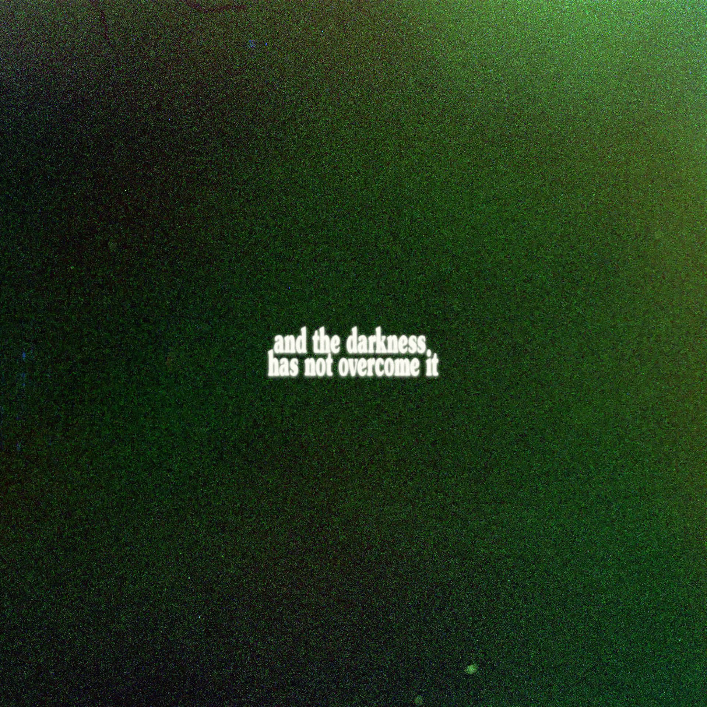

Ethan David Bieg
Home
About
Photography
Videography
Music
Visual Art
Poetry
Contact
Music I've released so far
snapshots of a kingdom of light
My first album, released in 2025. The heart of this album was for rest, reflection, and meditation. The album is full of natural sounds and samples that I recorded myself in nature.

and the darkness has not overcome it
This was the first single I ever released. It was a piece of music that came together quickly and I found myself listening to it in times of prayer and reflection. This started the vision for my album.